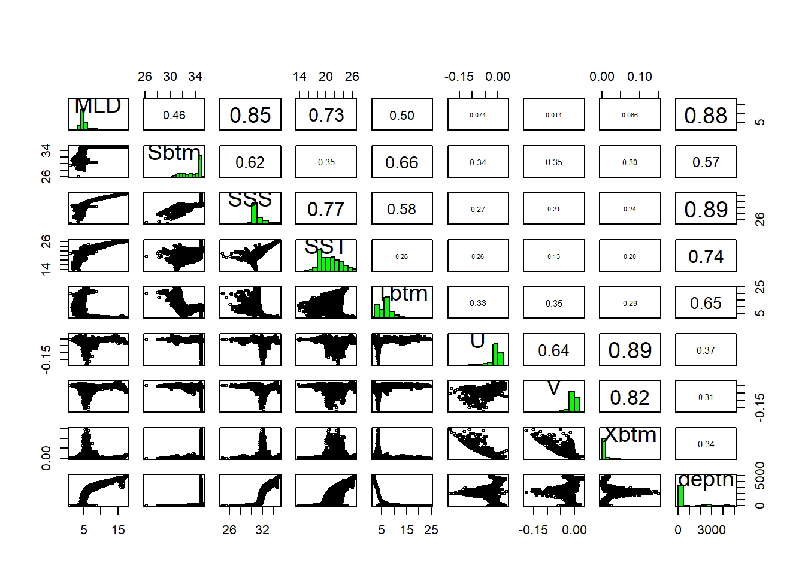

source("setup.R")Prediction
- “In the end that was the choice you made, and it doesn’t matter how hard it was to make it. It matters that you did.”
- Cassandra Clare
Now we turn our attention to what we know and guess about the environments. We are using the Brickman data to make habitat suitability maps for select species under two climate scenarios (RCP45 and RCP85) at two different times (2055 and 2075) in the future. Each variable we might use is called covariate or predictor. Our covariates are nicely packaged up and tidy, but the reality is that it often requires a good deal of data wrangling if the data are messy.
Our step here is to make sure that two or more covariates are not highly correlated if they are, then we would likely want to drop all but one.
1 Setup
As always, we start by running our setup function. Start RStudio/R, and relaod your project with the menu File > Recent Projects.
2 A broad approach - looking for correlation across the domain
We can look at the entire domain, the complete spatial extent of our arrays of data, to look for correlated variables. For example, we might wonder if sea surface temperature(SST) and sea floor temperature (Tbtm) vary together, when one goes up the other goes up. That sort of thing. We have ways of getting at those correlations.
2.1 Reading in the covariates
We’ll read in the Brickman database, then filter two different subsets to read: “STATIC” covariate bathymetry that apply across all scenarios and times and monthly covariates for the “PRESENT” period. Note that depth is automatically included - that’s an option - see ?read_brickman for more information.
db = brickman_database()
present = read_brickman(filter(db, scenario == "PRESENT", interval == "mon"))We have used August before as our example, let’s continue with August.
aug = present |>
dplyr::slice("month", "Aug")2.2 Make a pairs plot
A pairs plot is a plot often used in exploratory data analysis. It makes a grid of mini-plots of a set of variables, and reveals the relationships among the variables pair-by-pair. It’s easy to make.
pairs(aug)
In the lower left portion of the plot we see paired scatter plots, at upper right we see the correlation values of the pairs, and long the diagonal we see a histogram of each variable. Some pairs are highly correlated, say over 0.7, and to include both in the modeling might not provide us with greater predictive power. It may feel counterintuitive to remove any variables - more data means more information, right? And more information means more informed models. Consider two measurements, human arm length and inseam. We might use these to predict if a person is tall, but since they are probably strongly collinear/correlated do we really need both?
2.3 Identify the most independent variables (and the most collinear)
We have a function that can help use select which variables to remove. filter_collinear() returns a listing of variables it suggests we keep. It attaches to the return value an attribute (like a post-it note stuck on a box) that lists the complementary variables that it suggests we drop. We are choosing a particular method, but you can learn more about using R’s help for ?filter_collinear.
keep = filter_collinear(aug, method = "vif_step")
keep[1] "MLD" "Sbtm" "SSS" "SST" "Tbtm" "U" "V"
attr(,"to_remove")
[1] "Xbtm" "depth"Of course, we can decide to ignore this advice, and pick which ever ones we want including keeping them all.
Whatever selection of variables we decide to model with, we will save this listing to a file. That way we can refer to it progammatically. But that comes later.
2.4 A closer look at the model input data
Before we do commit to a selection of variables, let’s turn our attention back to our presence-background points, and look at just those chosen values rather than at values drawn form across the entire domain. Let’s open the file that contains the “greedy” model input for August during the PRESENT climate scenario.
model_input = read_model_input(scientificname = "Mola mola",
approach = "greedy",
mon = "Aug")
model_inputSimple feature collection with 7277 features and 1 field
Geometry type: POINT
Dimension: XY
Bounding box: xmin: -74.89169 ymin: 38.805 xmax: -65.02004 ymax: 45.21401
Geodetic CRS: WGS 84
# A tibble: 7,277 × 2
class geom
<chr> <POINT [°]>
1 presence (-72.8074 39.056)
2 presence (-71.343 40.52)
3 presence (-68.7691 41.52448)
4 presence (-67.79 43.32)
5 presence (-68.44324 42.61177)
6 presence (-72.4328 40.213)
7 presence (-71.8784 40.3569)
8 presence (-65.78 43.195)
9 presence (-70.5 42.767)
10 presence (-72.3024 40.1862)
# ℹ 7,267 more rowsNext we’ll extract data values from our August covariates.
variables = extract_brickman(aug, model_input, form = "wide")
variables# A tibble: 7,277 × 10
point MLD Sbtm SSS SST Tbtm U V Xbtm depth
<chr> <dbl> <dbl> <dbl> <dbl> <dbl> <dbl> <dbl> <dbl> <dbl>
1 p0001 5.17 35.0 31.6 23.3 7.50 -0.00161 -0.00340 0.00133 304.
2 p0002 4.25 32.8 30.6 21.6 8.15 -0.00420 -0.00206 0.00166 71.6
3 p0003 4.64 34.0 30.7 20.2 7.05 0.00168 0.00148 0.000793 138.
4 p0004 5.58 34.6 30.7 18.8 7.55 0.00267 -0.000410 0.000957 234.
5 p0005 5.04 34.7 30.7 19.0 7.43 -0.00619 -0.00121 0.00224 205.
6 p0006 4.01 32.4 30.6 22.0 8.22 -0.00344 -0.000859 0.00126 62.6
7 p0007 4.10 32.9 30.5 21.8 8.34 -0.00565 -0.00226 0.00216 71.3
8 p0008 3.82 32.4 30.3 18.2 3.56 -0.00702 -0.00431 0.00293 81.6
9 p0009 3.20 32.4 30.6 17.9 5.73 0.000275 -0.00101 0.000372 70.6
10 p0010 4.02 32.9 30.6 22.0 8.62 -0.000900 -0.00148 0.000614 64.9
# ℹ 7,267 more rowsWe are going to call a plotting function, plot_pres_vs_bg(), that wants some of the data from model_input and some of the data in variables. So, we have to do some data wrangling to combine those; we’ll add class to variables and then drop the point column.
variables = variables |>
mutate(class = model_input$class) |> # the $ extracts a column
select(-point) # the - means "deselect" or "drop"
variables# A tibble: 7,277 × 10
MLD Sbtm SSS SST Tbtm U V Xbtm depth class
<dbl> <dbl> <dbl> <dbl> <dbl> <dbl> <dbl> <dbl> <dbl> <chr>
1 5.17 35.0 31.6 23.3 7.50 -0.00161 -0.00340 0.00133 304. presence
2 4.25 32.8 30.6 21.6 8.15 -0.00420 -0.00206 0.00166 71.6 presence
3 4.64 34.0 30.7 20.2 7.05 0.00168 0.00148 0.000793 138. presence
4 5.58 34.6 30.7 18.8 7.55 0.00267 -0.000410 0.000957 234. presence
5 5.04 34.7 30.7 19.0 7.43 -0.00619 -0.00121 0.00224 205. presence
6 4.01 32.4 30.6 22.0 8.22 -0.00344 -0.000859 0.00126 62.6 presence
7 4.10 32.9 30.5 21.8 8.34 -0.00565 -0.00226 0.00216 71.3 presence
8 3.82 32.4 30.3 18.2 3.56 -0.00702 -0.00431 0.00293 81.6 presence
9 3.20 32.4 30.6 17.9 5.73 0.000275 -0.00101 0.000372 70.6 presence
10 4.02 32.9 30.6 22.0 8.62 -0.000900 -0.00148 0.000614 64.9 presence
# ℹ 7,267 more rowsFinally, can make a specialized plot comparing our variables for each class: presence and background.
plot_pres_vs_bg(variables, "class")
How does this inform our thinking about reducing the number of variables? For which variables do presence and background values mirror each other? Which have the least overlap? We know that the model works by finding optimal combinations of covariates for the species. If there is never a difference between the conditions for presences and background then how will it find the optimal niche conditions?
2.5 Saving a file to keep track of modeling choices
You may have noticed that we write a lot of things to files (aka, “writing to disk”). It’s a useful practice especially when working with a multi-step process. One particular file, a configuration file, is used frequently in data science to store information about the choices we make as we work through our project. Configuration files generally are simple text files that we can easily get the computer to read and write.
In R, a confguration is treated as a named list. Each element of a list is named, but beyond that there aren’t any particular rules about confugurations. You can learn more about configurations in this tutorial.
Let’s make a confuguration list that holds 4 items: version identifier, species name, sampling approach and the names of the variables to model with.
cfg = list(
version = "g_Aug", # g for greedy!
scientificname = "Mola mola",
approach = "greedy",
mon = "Aug",
keep_vars = keep)We can access by name three ways using what is called “indexing” : using the [[ indexing brackets, using the $ indexing operator or using the getElement() function.
cfg[['scientificname']][1] "Mola mola"cfg[[2]][1] "Mola mola"cfg$scientificname[1] "Mola mola"getElement(cfg, "scientificname")[1] "Mola mola"getElement(cfg, 2)[1] "Mola mola"Now we’ll write this list to a file. First let’s set up a pathwy where we might store these configurations, and for that matter, to store our modeling files. We’ll make a new directory, models/g008 and write the configuration there. We’ll use the famous “YAML” format to store the file. See the file functions/configuration.R for documentation on reading and writing.
ok = make_path(data_path("models")) # make a directory for models
write_configuration(cfg) Use the Files pane to navigate to your personal data directory. Open the g_Aug.yaml file - this is what you configuration looks like in YAML. Fortunately we don’t mess manually with these much.
3 Recap
We loaded the covariates for the “PRESENT” climate scenario and looked at collinearity across the entore study domain. We invoked a function that suggests which variables to keep and which to drop based upon collinearity. We examined the covariates at just the presence and background locations. We then saved a configuration for later reuse.
4 Coding Assignment
Open and edit the file called functions/select_covariates.R. Within the file write the function(s) you need to select the “keeper” variables for a given approach (greedy or conservative) and a given month (Jan - Dec). Have the function return an appropriate configuration list. The function shoulkd start out approximately like this…
#' Given a species, month and sampling approach select variabkes for each month
#'
#' @param approach chr one of "greedy" (default) or "conservative"
#' @param mon chr month abbreviation ("Jan" default)
#' @param scientificname chr the species studied (default "Mola mola")
#' @param path chr file path to the personal data directory
#' @return a configuration list
select_covariates = function(approach = "greedy",
mon = "Jan",
scientificname = "Mola mola",
path = data_path()){
ret = list(
version = <something you make goes here>,
scientificname = scientificname,
approach = approach,
mon = month,
keep_vars = <something you make goes here>)
}Use the iterations tutorial to apply your select_covariates() for each month using each approach. At each iteration write the configuration. When you are done, you should have 12 YAML files for each approach - so 24 YAML files written all together for each species.
- All models are wrong, but some are useful.
- George Box
Modeling starts with a collection of observations (presence and background for us!) and ends up with a collection of coeefficients that can be used with one or more formulas to make a predicition for the past, the present or the future. We are using modeling specifically to make habitat suitability maps for select species under two climate scenarios (RCP45 and RCP85) at two different times (2055 and 2075) in the future.
We can choose from a number of different models: random forest “rf”, maximum entropy “maxent” or “maxnet”, boosted regression trees “brt”, general linear models “glm”, etc. The point of each is to make a mathematical representation of natural occurrences. It is important to consider what those occurences might be - categorical like labels? likelihoods like probabilities? continuous like measurements? Here are examples of each…
- Categorical
- two class labels: “present/absence”, “red/green”, “shell/no shell”, “alive/dead”
- multi-class labels: “vanilla/chocolate/strawberry”, “immature/mature/aged”
- Likelihood and Probability
- probability: “50% chance of rain”, “80% chance of a fatal fall”
- relativity: “low likelihood of encounter”, “some likelihood of encounter”
- Continuous
- abundance: “48.2 mice per km^2”, “10,500 copepods per m^3”
- rate: “50 knot winds”, “28.2 Svedrups”
- measure: “3.2 cm of rain”, “12.1 grams of carbon”
We are modeling with known observations (presences) and a sampling of the background, so we are trying to model a likelihood that a species will be encountered (and reported) relative to the environmental conditions. We are looking for a model that can produce relative likelihood of an encounter that results in a report.
We’ll be using a random forest model (rf). We were inspired to follow this route by using this tidy models tutorial prepared by our colleague Omi Johnson.
5 Setup
As always, we start by running our setup function. Start RStudio/R, and reload your project with the menu File > Recent Projects.
source("setup.R")6 Load data - choose a month and sampling approach
Let’s load what we need to build a model for August using the greedy sampling technique. We’ll also need the model configuration (which is “g_Aug”). And we’ll need the covariate data. Notice that we select the covariates that are included in our configuration.
model_input = read_model_input(scientificname = "Mola mola",
approach = "greedy",
mon = "Aug")
cfg = read_configuration(version = "g_Aug")
db = brickman_database()
covars = read_brickman(db |> filter(scenario == "PRESENT", interval == "mon"))|>
select(all_of(cfg$keep_vars))Of course we need covariates for August only, for this we can use a function we prepared earlier, prep_model_data(). Note the we specifically ask for a plain table which means we are dropping the spatial information for now. Also, we select only the variables required in the configuration, plus the class label.
all_data = prep_model_data(model_input,
month = "Aug",
covars = covars,
form = "table") |>
select(all_of(c("class", cfg$keep_vars)))
all_data7 Split the data set into testing and training data sets
We will split out a random sample of our dataset to a larger set used for training the model, and a smaller set we withhold to use for later testing of the model. Since we have labeled data (“presence” and “background”) we want to be sure we sample these in proportion, for that we’ll indicate that the data are stratified (into just two groups). Let’s first determine what the proportion is before splitting.
# A little function to compute the ratio of presences to background
# @param x table with a "class" column
# @return numeric ratio presences/background
get_ratio = function(x){
counts = count(x, class)
np = filter(counts, class == "presence") |> pull(n)
nb = filter(counts, class == "background") |> pull(n)
return(np/nb)
}
cat("ratio of presence/background in full data set:", get_ratio(all_data), "\n")Now let’s make the split with the training set comprising 75% of all_data. Note that we specifically identify class as the strata (or grouping) variable.
split_data = initial_split(all_data,
prop = 3/4,
strata = class)
split_dataIt prints the counts of the training data, the testing data and the entire data set. We can extract the training data and testing data using the training() and testing() functions. Let’s check the ratios for those..
cat("ratio of presence/background in training data:",
training(split_data) |> get_ratio(), "\n")
cat("ratio of presence/background in testing data:",
testing(split_data) |> get_ratio(), "\n")OK! The samples observed the original proportion of presence/background.
Note! Did you notice that the function is called
initial_split(), which implies a subsequent split - what do you suppose that is about?
8 Create a workflow
workflows are containers for storing the data pre-processing steps and model specifications. Not too long ago it was quite a challenge to to keep track of all the bits and pieces required to make good forecasts. The advent of workflows greatly simplifies the process. A workflow will house two important items for us: a recipe and a model. For now, we’ll create an empty workflow, then add to it as needed. At the very end, we’ll save the workflow.
wflow = workflow()That’s it!
9 Build a recipe
The first thing we’ll add tot he workflow is a recipe. A recipe is a blueprint that guides the data handling and modeling process.
A recipe at a bare minimum needs to know two things: what data it has to work with and what is the relationship among the variables within the data. The latter is expressed as a formula, very similar to how we specify the formula of a line with y = mx + b or a parabola y = ax^2 + bx + c.
Note
We often think of formulas as left-hand side (LHS) and right-hand side (RHS) equalities. And usually, the LHS is the outcome while the RHS is about the inputs. For our modeling, the outcome is to predict the across the entire domain. We can generalize the idea with the “is a function of” operator ~ (the tilde). For the classic formula for a line it like this… y ~ x and a parabola is also y ~ x.
Consider a situation where we have reduced all of the suitable variables to Sbtm, Tbtm, MLD andXbtm, which we have in a table along with a class variable. In our case we have the outcome is an prediction of class it is a function of variables like Sbtm, Tbtm, MLD, Xbtm, etc. This formula would look like y ~ Sbtm + Tbtm + MLD + Xbtm. Unlike the specific equation for a line or parabola, we don’t pretend to know what coefficients, powers and that sort of stuff looks like. We are just saying that class is a function of all of those variables (somehow).
In the case here where the outcome (class) is a function of all other variables in the table, we have a nice short hand. class ~ . where the dot means “every other variable”.
First we fish out of our split data the training data, and then drop the spatial information.
tr_data = training(split_data)
tr_dataNow we make the recipe. Note that no computation takes place.
Note
Technically, recipe() only needs a small subset of the data set to establish the names and data types of the predictor and outcome variables. Just one row would suffice. That underscores that a recipe is simply building a template.
rec = recipe(class ~ ., data = slice(tr_data,1))
recThis print out provides a very high level summary - all of the details are glossed over. To get a more detailed summary use the summary() function.
summary(rec)Each variable in the input is assigned a role: “outcome” or “predictor”. The latter are the variables used in the creation of the model. There are other types of roles, (see ?recipe) including “case_weight” and “ID”, and others can be defined as needed. Some are used in building the model, others are simply ride along and don’t change the model outcome.
9.1 Modifying the recipe with steps
Steps are cumulative modifications, and that means the order in which they are added matters. These steps comprise the bulk of pre-processing steps.
Some modifications are applied row-by-row. For example, rows of the input modeling data that have one or more missing values (NAs) can be problematic and they should be removed.
Other modifications are to manipulate entire columns. Sometimes the recipes requires subsequent steps before the modeling begins in earnest. For example we know from experience that it is often useful to log scale (base 10) depth when working with biological models. If depth and Xbtm have made it this far, you’ll note that each range over 4 or more orders of magnitude. That’s not a problem by itself, but it can introduce a bias toward larger values whenever the mean is computed. So, we’ll add a step for log scaling these, but only if depth and Xbtm have made it this far (this may vary by species.)
rec = rec |>
step_naomit()
if ("depth" %in% cfg$keep_vars){
rec = rec |>
step_log(depth, base = 10)
}
if ("Xbtm" %in% cfg$keep_vars){
rec = rec |>
step_log(Xbtm, base = 10)
}
recNext we state that we want to remove variables that might be highly correlated with other variables. If two variables are highly correlated, they will not provide the modeling system with more information, just redundant information which doesn’t neccessarily help. step_corr() accepts a variety of arguments specifying which variables to test to correlation including some convenience selectors like all_numeric(), all_string() and friends. We want all predictors which happen to all be numeric, so we can use all_predictors() or all_numeric_predictors(). Specificity is better then generality so let’s choose numeric predictors.
Note
We have already tested variables for high collinearlity, but here we can add a slightly different filter, high correlation, for the same issue. Since we have dealt with this already we shouldn’t expect that step will change the preprocessing very much. But it is instructive to see it in action.
rec = rec |>
step_corr(all_numeric_predictors())
rec9.2 Add the recipe to the workflow
wflow = wflow |>
add_recipe(rec)
wflow10 Build a model
We are going to build a random forest “rf” model in classification mode which means for us that we have predictions of “presence” or “background”. That’s just two classes, random forests can predict multiple classes, too. Also, random forests can make regression models which are used for continuous data. Below we start the model, declare its mode and assign an engine (the package we prefer to use.) We’ll be using the ranger R pakage.
10.1 Create the model
We create a random forest model, declare that it should be run in classification mode (not regression mode), and then specify that we want to use the ranger modeling engine (as opposed to, say, the randForest engine). We additionally specify that it should be able to produce probablilites of a class not just the class label. We also request that it saves bits of info so that we can compare the relative importance of the covariates.
model = rand_forest() |>
set_mode("classification") |>
set_engine("ranger", probability = TRUE, importance = "permutation")
modelWell, that feels underwhelming. We can pass arguments unique to the engine using the set_args() function, but, for now we’ll accept the defaults.
10.2 Add the model to the workflow
Now we simply add the model to the workflow.
wflow = wflow |>
add_model(model)
wflow11 Fit the model
fitted_wflow = fit(wflow, data = tr_data)
fitted_wflow12 Making predictions
Predicting is easy with this pattern: predictions = predict(model, newdata, ...) We want to specify that we want probabilites of a particular class being predicted. In each case we bind to the prediction our original classification, class.
12.1 Predict with the training data
First we shall predict with the same data we trained with. The results of this will not really tell us much about our model as it is very circular to predict using the very data used to build the model. So this next section is more about a first pass at using the tools at your disposal.
train_pred = predict_table(fitted_wflow, tr_data, type = "prob")
train_predHere the variables prepended with a dot . are computed, while the class variable is our original. There are many metrics we can use to determine how well this model predicts. Let’s start with the simplest thing… we can make a simply tally of .pred and class.
count(train_pred, .pred, class)There false positives and false negatives, but many are correct. Of course, this is predicting with the very data we used to train the model; knowing that this is predicicting on training data with some many misses might not inspire confidence. But let’s explore more.
12.2 Assess the model
Hewre we walk through a number of common assessment tools. We want to assess a model to ascertain how closely it models reality (or not!) Using the tools is always easy, interpreting the metrics is not always easy.
12.2.1 Confusion matrix
The confusion matrix is the next step beyond a simple tally that we made above.
train_confmat = conf_mat(train_pred, class, .pred)
train_confmatYou’ll see this is the same as the simple tally we made, but it comes with handy plotting functionality (shown below). Note that a perfect model would have the upper left and lower right quadrants fully accounting for all points. The lower left quadrant shows us the number of false-negatives while the upper right quadrant shows the number of false-positives.
autoplot(train_confmat, type = "heatmap")12.2.2 ROC and AUC
The area under the curve (AUC) of the receiver-operator curve (ROC) is a common metric. AUC values range form 0-1 with 1 reflecting a model that faithfully predicts correctly. Technically an AUC value of 0.5 represents a random model (yup, the result of a coin flip!), so values greater than 0.5 and less than 1.0 are expected.
First we can plot the ROC.
plot_roc(train_pred, class, .pred_presence)We can assure you from practical experience that this is an atypical ROC. Typically they are not smooth, but this smoothness is an artifact of our use of training data. If you really only need the AUC, you can use the roc_auc() function directly.
roc_auc(train_pred, class, .pred_presence)12.2.3 Accuracy
Accuracy, much like our simple tally above, tells us what fraction of the predictions are correct. Not that here we explicitly provide the predicted class label (not the probability.)
accuracy(train_pred, class, .pred)12.2.4 Partial dependence plot
Partial dependence reflects the relative contrubution of each variable influence over it’s full range of values. The output is a grid grid of plots showing the relative distribution of the variable (bars) as well as the relative influenceof the variable (line).
partial_dependence_plot(fitted_wflow, data = tr_data)12.3 Predict with the testing data
Finally, we can repeat these steps with the testing data. This should give use better information than using the training data
12.3.1 Predict
test_data = testing(split_data)
test_pred = predict_table(fitted_wflow, test_data, type = "prob")
test_pred12.3.2 Confusion matrix
test_confmat = conf_mat(test_pred, class, .pred)
autoplot(test_confmat, type = "heatmap")12.3.3 ROC/AUC
plot_roc(test_pred, class, .pred_presence)This ROC is more typical of what we see in regular practice.
12.3.4 Accuracy
accuracy(test_pred, class, .pred)12.3.5 Partial Dependence
partial_dependence_plot(fitted_wflow, data = test_data)13 Saving recipes and models to disk as a workflow
We can (and should!) save recipes and models to disk for later recall. We need the recipe because it handle the pre-processing of our covariates, while the model specifies both the form of the model as well as the necessary coefficients. When bundled together for later use we can be assured the the data pre-processing steps and model specifications will be available. A workflow is a container for recipes, models and other parts of the model process.
Now we can save the workflow container.
write_workflow(fitted_wflow, version = cfg$version)You can read it back later with read_workflow().
14 Recap
We have built a random forest model using tools from the tidymodels universe. After reading in a suite of data, we split our data into training and testing sets, witholding the testing set until the very end. We looked a variety of metrics including a simple tally, a confusion matrix, ROC and AUC, accuracy and partial dependencies. We saved the recipe and model together in a special container, called a workflow, to a file.
15 Coding Assignment
Use the iterations tutorial to build a workflow for each month using one or both of your background selection methods. Save each workflow in the models directory. If you chose to do both background selection methods then you should end up with 24 workflows (12 months x 2 background sampling methods).
- It’s tough to make predictions, especially about the future.
- Yogi Berra
Finally we come to the end product of forecasting: the prediction. This last step is actually fairly simple, given a recipe and model (now bundled in a workflow container), run the same data-prep and predicting steps as we did earlier. One modification is that we now want to predict across the entire domain of our Brickman data set. You may recall that we are able to read these arrays, display them and extract point data from them. But we haven’t used them en mass as a variable yet.
16 Setup
As always, we start by running our setup function. Start RStudio/R, and reload your project with the menu File > Recent Projects.
source("setup.R")17 Load the Brickman data
Once again, we’ll use the August data where we started with a greedy sampling approach. We are going to make a prediction about the present, which means it something akin to a nowcast.
cfg = read_configuration(version = "g_Aug")
db = brickman_database()
covars = read_brickman(db |> filter(scenario == "PRESENT", interval == "mon")) |>
select(all_of(cfg$keep_vars)) |>
slice("month", "Aug") 18 Load the workflow
We read the recipe and model workflow bundle.
wflow = read_workflow(version = cfg$version)Recall that the workflow has two elements: pre-processing recipe and model. When we make a prediction with the workflow it will accept new data that then gets filtered and/or transformed as specified by the recipe steps. The data that survives the preprocessing will then be used to feed into the model that was trained on a specific domain (time and space).
19 Make a prediction
First we shall make a “nowcast” which is just a prediction of the current environmental conditions.
19.1 Nowcast
First make the prediction. The function yields a stars array object that has three attributes: .pred_presence, .pred_background and .pred. The leading dot simply gives us the heads up that these three values are all computed. The first two range from 0-1 which implies a probability. The last, .pred, is the class label we would assign if we accept that any .pred_presence >= 0.5 should be considered suitable habitat where a reported observation might occur.
nowcast = predict_stars(wflow, covars)
nowcastNow we can plot what is often called a “habitat suitability index” (hsi) map.
coast = read_coastline()
plot(nowcast['.pred_presence'], main = "Nowcast August",
axes = TRUE, breaks = seq(0, 1, by = 0.1), reset = FALSE)
plot(coast, col = "orange", lwd = 2, add = TRUE)We can also plot a presence/background labeled map, but keep in mind it is just a thresholded version of the above where “presence” means .pred_presence >= 0.5.
plot(nowcast['.pred'], main = "Nowcast August Labels",
axes = TRUE, reset = FALSE)
plot(coast, col = "black", lwd = 2, add = TRUE)19.2 Forecast
Now let’s try our hand at forecasting - let’s try RCP85 in 2075. First we load those parameters, then run the prediction and plot.
covars_rcp85_2075 = read_brickman(db |> filter(scenario == "RCP85", year == 2075, interval == "mon")) |>
select(all_of(cfg$keep_vars)) |>
slice("month", "Aug") forecast_2075 = predict_stars(wflow, covars_rcp85_2075)
forecast_2075coast = read_coastline()
plot(forecast_2075['.pred_presence'], main = "RCP85 2075 August",
axes = TRUE, breaks = seq(0, 1, by = 0.1), reset = FALSE)
plot(coast, col = "orange", lwd = 2, add = TRUE)Hmmm, that’s pretty different than what the nowcast predicts.
20 Time series
It would be nice to see a time series: current, 2055 and 2075 on the same graphic. Let’s load RCP85 2055 data, and make yet another prediction.
20.1 Forecast 2055
covars_rcp85_2055 = read_brickman(db |> filter(scenario == "RCP85", year == 2055, interval == "mon")) |>
select(all_of(cfg$keep_vars)) |>
slice("month", "Aug")
forecast_2055 = predict_stars(wflow, covars_rcp85_2055)
forecast_205520.2 Bind time series
We want to bind the .pred_presence attribute for each of the predictions (nowcast, forecast_2055 and forecast_2075). Let’s assume the “present” mean 2020 so we can assign a year.
rcp85 = c(nowcast, forecast_2055, forecast_2075, along = list(year = c("2020", "2055", "2075")))
Note
Curious about we provide year as a vector of characters instead of a vector of integers? Try running the command above again and check out the 3rd dimension.
Since we are plotting multiple arrays, we need to plot the coastline using a “hook” function.
plot_coast = function(){
plot(coast, col = "orange", lwd = 2, add = TRUE)
}
plot(rcp85['.pred_presence'],
hook = plot_coast,
axes = TRUE, breaks = seq(0, 1, by = 0.1), join_zlim = TRUE, reset = FALSE)Hmmmm. Why does there seem to be a strong shift between 2020 and 2055, while the 2055 to 2075 shift seems less pronounced?
Note
Don’t forget that there are other ways to plot array based spatial data.
20.3 Save the predictions
We could save all three attributes, but .pred_background is just 1 - .pred_presence, and .pred is just coding “presence” where .pred_presence >= 0.5, so we can always compute those as needed if we have .pred_presence. In that case, let’s just save the first attribute, .pred_presence, in a multilayer GeoTIFF formatted image array file. The write_prediction() function will do just that.
# make sure the output directory exists
path = data_path("predictions")
if (!dir.exists(path)) ok = dir.create(path, recursive = TRUE)
# write individual arrays?
write_prediction(nowcast, file = file.path(path,"g_Aug_RCP85_2020.tif"))
write_prediction(forecast_2055, file = file.path(path, "g_Aug_RCP85_2055.tif"))
write_prediction(forecast_2075, file = file.path(path, "g_Aug_RCP85_2075.tif"))
# or write them together in a "multi-layer" file?
write_prediction(rcp85, file = file.path(path, "g_Aug_RCP85_all.tif"))To read it back simply provide the filename to read_prediction(). If you are reading back a multi-layer array, be sure to check out the time argument to assign values to the time dimension. Single layer arrays don’t have the concept of time so the time argument is ignored.
21 Recap
We made both a nowcast and a number predictions using a previously saved workflow. Contrary to Yogi Berra’s claim, it’s actually pretty easy to predict the future. Perhaps more challenging is to interpret the prediction. We bundled these together to make time series plots, and we saved the .pred_presence values.
22 Coding Assignment
For each each climate scenario create a monthly forecast (so that’s three: nowcast, forecast_2055 and forecast_2075) and save each to in your predictions directory. Whether you choose to draw upon the greedy background sampling method, the conservative background sampling method or both is up to you. Keep in mind that some months may not have enough data to model without throwing an error. We suggest that you wrap your critical steps in a try() function which will catch the error without crashing your iterator. There is a tutorial on error catching that specifically uses try().